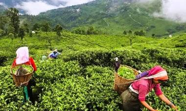

History of Valparai
Before roads and plantations reached the area, Valparai was largely covered by forests and inhabited by indigenous communities. Its remote location kept the region naturally rich and ecologically protected.

Tea Plantation Development
Tea cultivation became the main economic activity in the Anamalai region. Workers opened new estates, built infrastructure and developed a plantation-based society that continues to shape Valparai today.

Present-Day Valparai
Valparai is now a thriving tourism destination, trading centre and gateway to important forest areas. Conservation organisations and local communities work to balance development with protection of elephants, lions-tailed macaques and other wildlife.